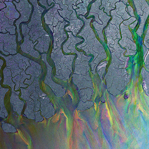

 An Awesome Wave (рус. Потрясающая волна) — дебютный студийный альбом, выпущенный 25 мая 2012 года лейблом Infectious Records. Альбом достиг 13-й строчки чарта UK Albums Chart, а также смог пробиться в чарты стран Европы. An Awesome Wave выиграл премию Barclaycard Mercury Prize в 2012 году, а также был удостоен награды Ivor Novello Awards в 2013 году.
Oбложка альбома представляет собой многослойный кадр, полученный с помощью съемочного радара, на котором изображена дельта Ганга в Бенгалии. Каждый слой изображения был сделан в разное время спутником «Энвисат» Европейского Космического Агентства. Готовое изображение называется «Гангейская ослепительная дельта». Многообразие цветов обусловлено различным радиоволновым фоном, запечатлённым на трёх разных снимках.
После награждения Mercury Prize альбом приобрёл бо́льшую популярность и достиг 13 позиции в британском чарте — продажи составили 13 527 копий. 2 августа 2013 года An Awesome Wave был сертифицирован как платиновый Британской ассоциацией производителей фонограмм, что означало продажу более 300 000 копий альбома. В том же году альбом был удостоен награды Ivor Novello Awards. An Awesome Wave вошёл в Billboard 200 6 октября 2012, заняв 134-ю строчку.